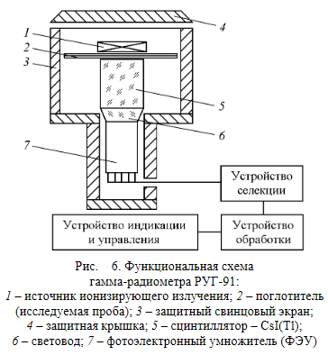

Источником гамма-излучения являются возбужденные ядра, образованные в результате альфа-, бета-распада или других радиоактивных превращений.
Возбужденные ядра в течение 10–12с переходят в основное состояние, испуская избыток энергии в виде фотонов. Если значком «*» обозначить возбужденное состояние ядра,
то процесс излучения фотона может быть записан так:
$${^A_Z X^* →} ^A_Z X + hv,$$
где hv–энергия гамма-фотона, испускаемая при переходе ядра из возбужденного энергетического состояния в стабильное.
Гамма-излучение – коротковолновое электромагнитное излучение с чрезвычайно малой длиной волны λ ⩽ 10–10 м (0,1 нм).
Это излучение имеет квантовый характер, т.е. испускается и распространяется в среде и поглощается веществом в виде отдельных дискретных квантов-фотонов. Фотон с энергией больше
100 кэВ обычно называется гамма-квантом.
Гамма-кванты не обладают ни зарядом, ни массой покоя. Их испускание не приводит к образованию ядер новых элементов. Возбужденное и стабильное ядро одного элемента отличается
только энергией, т.е. при гамма-переходах изменение зарядового числа Z имассового числа А не происходит. Гамма-кванты при прохождении через вещество взаимодействуют с
электронами атомов и электрическим полем ядра, в результате чего происходит ослабление интенсивности первичного пучка гамма-излучения. Потеря энергии происходит вследствие
протекания следующих независимых процессов: фотоэффекта, комптоновского рассеяния (эффект Комптона) и процесса образования электронно-позитронных пар.
Фотоэффект - процесс поглощения гамма-кванта атомным (связанным) электроном, при котором электрон покидает пределы атома. Такие электроны
называются фотоэлектронами. Фотоэффект чаще происходит при малых значениях энергии гамма-квантов и резко уменьшается с ее увеличением (рис. 1).
Наиболее интенсивно фотоэффект происходит в тяжелых ядрах при энергии фотонов от 0,001 до 0,2 МэВ. При этом гамма-квант поглощается каким-либо орбитальным электроном с
K-оболочки. Место выбитого электрона на внутренних оболочках заполняет один из внешних или свободных электронов. Переход электрона с внешней оболочки на внутреннюю
сопровождается излучением фотона характеристического рентгеновского излучения.
Комптоновское рассеяние, или эффект Комптона (рис. 2). При этом эффекте в результате упругого столкновения с
внешним (валентным) электроном гамма-квант передает ему часть своей энергии (электрон отдачи) и отклоняется от первоначального направления
распространения, а остальная часть энергии передается вторичному (рассеянному) гамма-кванту. Этот процесс протекает при любых энергиях гамма-квантов, но преимущественно с
энергией от 0,2 до 1 МэВ.
1.
2.
Гамма-квант передает электрону часть своей энергии, переходящей в кинетическую энергию электрона (Ее) и расходуется вторичным электроном на ионизацию атомов
вещества. При этом уменьшается энергия гамма-кванта (Еγ), изменяется направление его движения. Процесс уменьшения энергии гамма-квантов и рассеяния их
электронами получил название Комптон-эффекта (неупругое рассеяние).
Образование электронно-позитронных пар. Это процесс взаимодействия фотонов с веществом, при котором энергия фотона в электрическом поле ядра
(на расстояниях порядка 10–13 м) или электрона переходит в энергию массы покоя электрона е- и позитронае e+(рис. 3). Это взаимодействие
возможно, если гамма-квант имеет энергию, равную или большую 1,022 МэВ. Это объясняется тем, что энергия покоя электрона и позитрона соответственно равна 0,511 МэВ и на их
образование расходуется 1,022 МэВ.
3.
При энергиях фотонов значительно больше 1 МэВ происходят процессы образования пар в кулоновском поле электрона.
Пара е- и е+ образуется вследствие взаимопревращений элементарных частиц, входящих в состав ядра. Вся избыточная энергия, которой обладает гамма-квант сверх
1,022 МэВ, сообщается поровну в виде кинетической энергии электронуи позитрону по 0,511 МэВ. Образованная при этом пара электрон и позитрон расходует свою кинетическую энергию
на ионизацию среды, после чего позитрон аннигилирует, соединяясь с одним из имеющихся в среде свободных электронов. При аннигиляции позитрона с электроном образуются два вторичные
гамма-кванты, которые разлетаются в противоположные стороны. Угол между направлениями распространения каждой пары аннигиляционных фотонов равен примерно 180°(см. рис. 3).
На рис. 4 показана относительная вероятность ε поглощения фотонов разных энергий Eγ стандартной биологической тканью для трех процессов: фотоэффекта,
комптоновского рассеивания и образования электронно-позитронных пар.
Ионизирующая способность гамма-квантов при одинаковой энергии гамма-квантов и альфа-частиц и при одинаковой взаимодействующей среде в тысячи раз меньше, чем ионизирующая
способность альфа-частиц.
4.
В воздухе линейная плотность ионизации (ЛПИ) гамма-квантов составляет 2–3 пары ионов на 1 см пути пробега. Проникающая способность гамма-квантов в воздухе составляет сотни
метров.
При прохождении узких моноэнергетических пучков фотонов (гамма-квантов) через вещество энергия пучков не изменяется, а постепенно уменьшается их интенсивность I
по причине столкновения фотонов с электронами и ядрами.
Термин «узкий пучок фотонов» означает в данном случае то, что любое взаимодействие фотона с веществом выводит его из пучка. Если на
поверхность вещества падает пучок с интенсивностью I0, то на некоторой глубине x его интенсивность уменьшается и будет равной I, это значит, что I < I0.
Для однородной среды ослабление узкого пучка гамма-квантов (фотонов) происходит по экспоненциальному закону Бугера(закон ослабления излучения):
$$I = I_0 e^{- \mu x},$$
где I – интенсивность гамма-излучения на глубине х в веществе; I0 - интенсивность гамма-излучения при входе в вещество; μ - линейный коэффициент ослабления, см–1.
Коэффициент μ состоит из трех коэффициентов: коэффициента поглощения при фотоэффекте μф, коэффициента ослабления при Комптон-эффекте μK и
коэффициента поглощения при образовании электронно-позитронных пар μпар:
$$\mu = \mu_ф + \mu_К + \mu_{пар}$$
Величина 1 / μ равняется средней длине свободного пробега фотона в веществе. При толщине слоя вещества х, равной 1 / μ, интенсивность пучка фотонов уменьшается в е раз (е = 2,73).
В ядерной физике толщину поглотителя принято измерять в единицах массы, которая приходится на единицу площади по всей толщине экрана, а это значит, вместо x принято брать величину d = ρx,
где d - массовая толщина поглотителя, г/см2 или кг/м2; ρ – плотность поглотителя, г/см3.
Проведем преобразование закона Бугера так, чтобы в него входила массовая толщина d. Для этого показатели степени умножим и разделим на плотность поглотителя ρ:
$$I = I_0 e^-{\mu \rho x \over \rho}$$
Величина μm= μ / ρ (см2/г или м2/кг) называется массовым коэффициентом ослабления.
Тогда для массовых величин закон Бугера будет иметь вид
$$I = I_0 e^{-\mu_m d}$$
В области энергии от 2 до 10 МэВ массовый коэффициент ослабления примерно одинаков для всех веществ, а защитные стенки из любых материалов эквивалентны при одной и той же
массовой толщине d (кг/м2). Независимо от используемого материала общая масса защитной конструкции будет примерно одинаковой. Как следует из формулы μm
= μ / ρ, толщина защитной конструкции может быть уменьшена за счет выбора материала с большей плотностью.
Массовый коэффициент ослабления гамма-кванта рассчитывают по формуле:
$$\mu_m = {- ln{ I \over I_0} \over d}.$$
Зная массовый коэффициент ослабления, по кривым зависимости μm от Еγ можно определить энергию гамма-квантов (рис. 5). Линейный коэффициент
ослабления μ (или массовый коэффициент ослабления μm) характеризует процесс прохождения фотонного излучения через вещество. Этот коэффициент зависит от
свойств среды и энергии фотонов. В этом случае каждый акт взаимодействия фотона с атомом или электроном, независимо от того, произошло поглощение или рассеяние фотона,
приводит к выводу фотона из пучка.
5.
При прохождении гамма-квантов через тяжелые защитные стенки нельзя пренебречь рассеянными и вторичными фотонами. Хотя энергия рассеянных и вторичных фотонов ниже энергии
первичных, тем не менее часть этих гамма-квантов достигает границы защитной стенки, и в результате поток за пределами защиты оказывается больше.
Для исследования степени поглощения падающего потока гамма-квантов в данной лабораторной работе используется гамма-радиометр РУГ-91 «АДАНИ». Функциональная схема прибора
для измерений представлена на рис. 6.
Принцип действия гамма-радиометра основан на анализе амплитудного распределения световых импульсов, возникающих в сцинтилляционном детекторе при попадании в него
гамма-квантов.
6.
Исследуемый образец (проба) 2 устанавливается на детектор (сцинтиллятор) 5 внутрь свинцового защитного экрана 3. Сверху на пробу устанавливается источник излучения.
Защитный экран закрывается свинцовой защитной крышкой 4.
Световые вспышки, возникающие в сцинтилляторе 5, через световод 6 попадают на фотокатод ФЭУ 7 и преобразуются в электрические импульсы, которые после усиления поступают в
устройство селекции.
Устройство селекции производит сортировку импульсов по их амплитудам (пропорционально энергии регистрируемых гамма-квантов). Это позволяет определить парциальные вклады
изотопов цезия и калия в суммарную активность пробы.Устройство обработки управляет работой устройства селекции и вычисляет количественные характеристики ионизирующего
излучения. Устройство индикации и управления задает режим работы гамма-радиометра и индицирует на табло результат измерения.